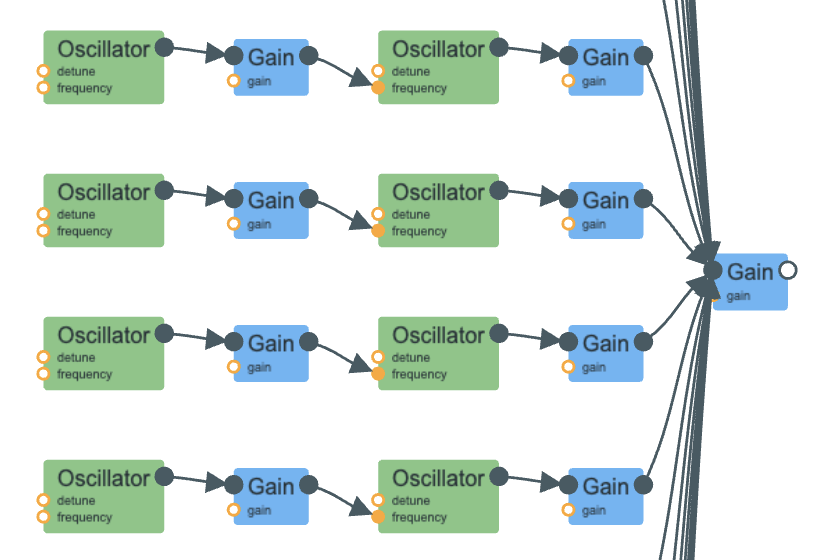

worked with ryan xu and cindy zhu
I focused pretty closely on "Method" section in the textbook. I started off with creating a sound per bounce, starting with FM synthesis on a sine wave, playing around with the frequency to get a "depth" that felt like a rubbery ball.
Next, as per the instructions, I added a simple ADSR envelope to the gain, the FM modulation index, and modulation frequency per impact -- that is, on each bounce, the attack peak of the gain/modulation index/ modulation frequency would be only 90% of the previous bounce. The exponential decrease in gain would make subsequent bounces quieter, and scaling the modulation index/frequency would make the bounce sound less "rubbery" and more like how the ball would lose energy.
Lastly, I added the logic to repeatedly play the bounce sound, faster and faster to give the sense that the ball was bouncing less high each time. I limited the time interval between bounces since when that gets "small enough" the ball would basically be at rest.
The concept of "adding a ball" was mostly just an artifact of the way I was adding oscillators to the audio context per bounce. I thought it was pretty fun to see how the sounds would interact, so I left that in. It did take some tweaking of the global gain to make sure I wasn't clipping, but I think it's ok in the end.
So here you can see that there's a "row" for each bounce that has the modulator oscillator, connected to the modulation index gain node, connected to the sine wave oscillator, connected to the final global gain. (There's a bunch more "rows" but I couldn't fit them all into the screenshot.)